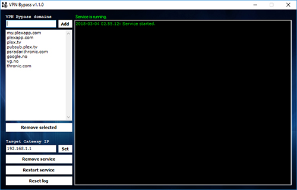

VPN Bypass

VPN Bypass can bypass local VPN and have specific domains use the local gateway instead
like it usually would when VPN is not active. For normal routing solutions, not system hooks.
VPN providers that implement their own traffic inspection and firewall filter will not be bypassed by this software.
Any existing antivirus solution must also accept automatic hosts file changes for VPN Bypass to work optimally.
Tested with TigerVPN, OpenVPN (should work with providers supporting and using it) and F-Secure FREEDOME.
Originally made for Plex, which uses Amazon CDN and rotating/load balancing IP addresses.
This software installs/removes an added service via the user interface that keeps all hosts in the list updated.
(Version 1.2.0+ now also supports round-robin / load balancing where a single domain may point to multiple IP adresses).
If your VPN metric is lower than default Bypass routes, just turn off automatic metric in your NIC and set it to 1.
This is a setting available in ncpa.cpl > NIC Properties > TCP/IPv4 properties > Advanced.
[ VpnBypass.rar ]
A RAR archive that includes both the GNU/Linux version,
(will install Mono if needed), and the installer for Windows.
Big thanks and improvement credits to Nightwaker for extensive testing!
Changelog